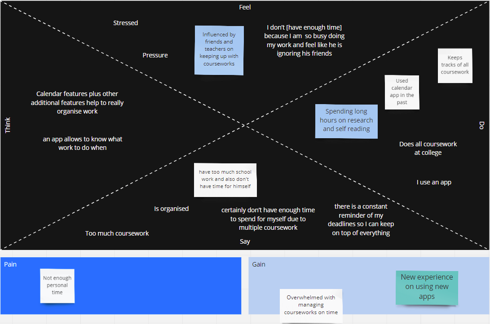

Process
Keeping you up to date
Needfinding
Looking into the requirements and needs desired by our users.
Interview
We began by interviewing a few people for a better understanding of our apps needs.
Interviewee 1 : Level 3 college student studying sciences.
1. Level of education?
Level 3
2. What methods do you currently use to plan and monitor your work and how easy do you find it to keep on top of educational assignments and deadlines with these methods?
She does them all at college. She manages that by finding a quite place without distractions. This helps her to stay up to date with her assignments
3. Do you feel like you have too much school work, do you feel like you have enough time for yourself?
Feels like she has too much school work and struggled to have time for herself even before starting part time work. After starting to work outside of college, she struggles even more to find time for herself.
4. Do you feel like you are organised with your school work?
She does feel organised with her school work as doing it all within the college helps her to complete everything on time
5. What features would you find helpful in a management system aimed at helping a student meet their deadlines and targets?
List of deadlines, deadline notifications and for each deadline a full description of what work needs to be done.
Interviewee 2 (Ripudaman Singh)
1. Level of education?
Currently a Level 5 University student
2. What methods do you currently use to plan and monitor your work and how easy do you find it to keep on top of educational assignments and deadlines with these methods?
I used calendar app until I was in college but ever since I found about Trello during my study in University, I have been using it to plan and monitor my works and I find it quite manageable as it has all the features of calendar app with more of its own features in it.
3. Do you feel like you have too much school work, do you feel like you have enough time for yourself?
Yes, I do feel like I have too much school work and certainly don’t have enough time to spend for myself due to multiple courseworks on every semester and with lots of self-studies on weekdays including working on Tesco during weekends.
4. Do you feel like you are organised with your school work?
Yes, because I keep track of all my courseworks.
5. What features would you find helpful in a management system aimed at helping a student meet their deadlines and targets?
The one that I am using Trello, helps me manage the tasks that need to be done. As an example I can place the courseworks that need to be done in the To Do bar, the courseworks that are currently being done can be placed in Doing bar and courseworks that are finished are placed in the Finished bar. This is helpful as I can keep track of my courseworks which are not finished yet. It’s a free app with easy organization tools.
Empathy Map
We created an empathy map to help visualise the results of one of the interviews
POV Table
POV becomes the guiding statement that focusses on insights and needs of a user
|
User |
Need |
Insight |
|
GCSE Student |
To prioritise which homework tasks to complete first based on importance and days remaining to work on her submission. |
The user has high contact hours and a low number of hours set aside for independent work. The user would not want to unnecessarily waste time that could be spent better elsewhere. The user needs to be reminded when to do work and which tasks are the most important. The user needs to manage her time in the most efficient way. The user wants to be alerted by notification when she needs to submit her work. |
|
Level 3 Science Student |
To be notified when deadlines are due and to be visually shown how each assignment splits into smaller sub tasks that need to be completed. |
The user has a limited number of free hours each week outside college due to part time work commitments. The user struggles with allocating free time in the most efficient way. The user needs to be visually shown how each assignment can be broken down into smaller and more manageable tasks. The user wants a feature that would send a mobile reminder when to work on assignments. |
|
Level 5 University Student |
For our devised service to be similar or better than the current study management web service they currently use (Trello). |
This user is an experienced student who has been using study management applications for a few years. This user identifies themselves as proactive and good with managing their time. This user does however state that they do not have enough free time for themselves because of having multiple deadlines due at the same time. Therefore, this user would need a feature that addresses this problem and helps provide a solution to balancing multiple coursework's at once. |
Prototyping
Heuristic Evaluation
Click here for the heuristic evaluation report
Concept Video
Click here for the concept video
Medium-Fi Prototype
Click here for the Medium-Fi Prototype
High-Fi Prototype
Click here for the High-Fi Prototype